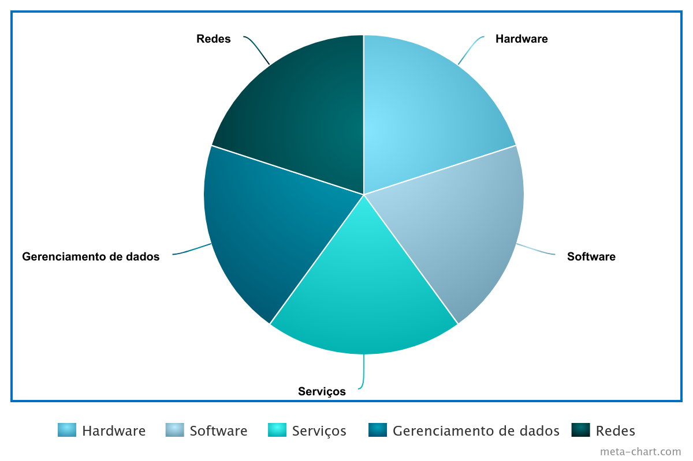
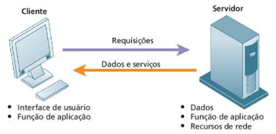
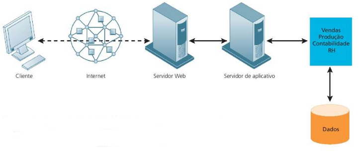
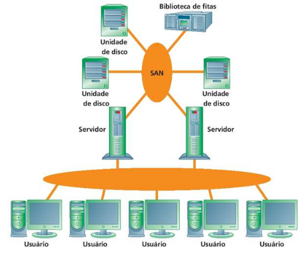
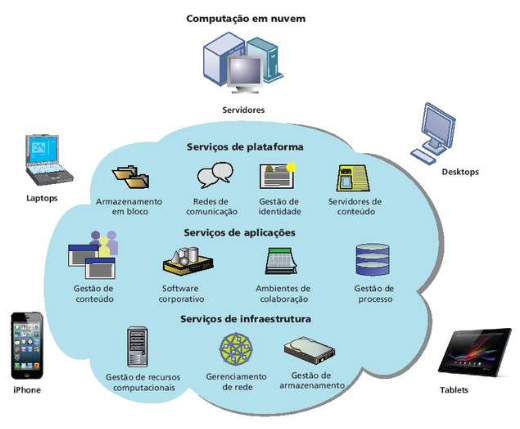
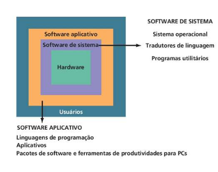

Capítulo 5
Infraestrutura de TI: hardware e software
Objetivos de estudo
Quais os componentes da infraestrutura de TI?
resposta**
Quais as principais tecnologias de hardware computacional, de
armazenamento de dados e de entrada e saída de dados utilizadas em
empresas e quais as tendências de hardware mais importantes?
resposta**
Quais os principais tipos de sofrware utilizados em empresas e as
tendências mais relevantes?
resposta**
Quais as principais questões envolvidas na admnistração dos recursos de
hardware e de software?
resposta**
5.1 - Infraestruturade TI: hardware do computador
datacenter:
é uma instalação que reúne sistemas computacionais e componentes
associadosm como sistemas de telecomunicações, armazenamento, segurança e
fornecimento de energia de backup
Um datacenter corresponde a um local físico que armazena máquinas de
computação e seus equipamentos de hardware relacionados. Ele contém a
infraestrutura de computação que os sistemas de TI exigem, como
servidores, unidades de armazenamento de dados e equipamentos de rede. É a
instalação física que armazena os dados digitais de qualquer empresa.
Componentes de infraestrutura

Hardware
O hardware são os componentes físicos, a tecnologia para processamento
computacional, armazenamento, entrada e saída de dados. Ex: mainframes,
servidores, computadores, dispositivos móveis, periféricos, armazenamento,
etc.
Tecnologia de gestão de dados
Além dos equipamentos, as empresas precisam de software para organizar,
gerenciar, processar esses dados e disponibilizá-los aos usuarios.
Tecnologia de rede e telecomunicações
ela proporciona conectividade de dados a funcionarios, clientes e
fornecedores. Redes internas da empresa, serviços prestados, hospedar
sites.
Serviços de tecnologia
Código, programas, sistemas legados, ferramentas gerenciamento e operação
de infraestrutura
Tipos de computador
É necessário que para os diferentes desafios e problemas as empresas
tenham o harwdware mais adequado para esse desafio, sem gastar demais com
tecnologia.
PC
Computador pessoal, de mesa ou laptop. Um harwdware mais simples
Dispositivos móveis
Smartphones, tablets
Workstation
Também se encaixa como computador de mesa, porém tem mais capacidade de
processamento matemático e gráfico superior à de um PC (Engenharia,
projetos avançados, edição de vídeo)
Servidor
Computadores servidores são otimizados para suportar uma rede de
computadores, permitindo compartilhamento de arquivos, software,
periféricos,e outros recursos de rede.
Mainframe
São usados por grandes bancos, companhias aéreas, seguradoras, corretoras de ações, orgãos públicos, para controlar centenas de milhares, milhões de registros e transações com extrema velocidade
Supercomputador
É um computador mais sofisticado, de projeto especial, usado para executar tarefas que requerem cálculos complexos e extremamente rapidos, com milhares de variáveis, milhões de medidas e milhares de equações. São utilizados em análises de engenharia, simulações, experimentos científicos. A petrobrás possui supercomputadores.
Computação em grade (grid computing)
Conecta, em uma rede, computadores geográficamente distantes, criando assim um "Supercomputador virtual", que conta com a capacidade combinada de todos os computadores da grade. Uma espécie de cluster superpoderoso via internet.
Redes de computadores e computação cliente/servidor
Em um ambiente profissional, você utilizará computadores em rede na maioria das tarefas de processamento. A utilização de múltiplos computadores para processamento é chamada de processamento distribuído.
Existe também o processamento centralizado, porém é muito menos comum.
Computação Cliente/Servidor
Divide o processamento entre "clientes" e "servidores". Ambos fazem parte da rede, mas cada máquina desempenha a função específica que estiver mais apta a executar.
O cliente é o ponto de entrada do usuário para a função requisitada. O servidor provê serviçõs ao cliente. Ex: autenticação

Rede cliente/servidor multicamadas (N-camadas)
Em uma rede cliente/servidor multicamadas, as solicitações de serviços dos clientes são atendidas por diferentes níveis de servidores.

Tecnologia de armazenamento, entrada e saída
Dispositivos periféricos
HD
SSD
CD
Redes de armazenamento de dados
Uma San consistem em um servidor, dispositivos de armazenamento e de redes. e usada para armazenamento. A SAN armazena dados em tipos diferentes de dispositivios de armazenamento, fornecendo dados para a empresa. Ela suporta comunicação entre qualquer servidor e a unidade de armazenamento, bem como entre os diferentes dispositivos de armazenamento na rede

Dispositivos de entrada
Recolhem dados e convertem em formato eletrônico para uso pelo computador
Dispositivos de saida
Apresentam os dados depois de processados.
Tendências contemporâneas de hardware
Plataforma digital móvel
Smartphones e tablets estão se tornando o principal meio de acesso à internet. Sendo cada vez mais usados para fins empresariais também.
Consumerização de TI e o uso do dispositivo pessoal no ambiente de trabalho
BYOD (bring your own device) é um dos aspectos da consumerização de TI. Sendo adotada por empresas permitindo que os funcionários usem seus dispositivos pessoais no ambiente de trabalho, levando a uma mudança na maneira como elas gerenciam seus recursos de TI. Historicamente, o departamento de TI controlava os recursos tecnológicos, mas hoje os funcionários têm mais liberdade para escolher suas próprias ferramentas e dispositivos. Isso inclui o uso de serviços originalmente desenvolvidos para o consumidor final, como Google, Dropbox, e redes sociais, que agora também são utilizados para fins profissionais.
Nanotecnologia e computação quântica
Ao longo do tempo, os fabricantes de microprocessadores conseguiram aumentar exponencialmente o poder de processamento enquanto diminuíam o tamanho do processador. Agora buscam utilizar a nanotecnologia para reduzir o tamanho de transistores para alguns átomos
Virtualização
A virtualização é o processo de apresentar um conjunto de recursos computacionais de forma que todos eles possam ser acessados independente de sua configyração física ou localização geografica.
A virtualização permite que a empresa lide com o seu processamento e armazenamento utilizando de recursos de computação instalados remotamente.
Por ser capaz de hospedar varios sistemas em uma única maquina física, a virtualização ajuda as organizações a aumentar as taxas de utilização de equipamentos, conservando espaço e uso de energia dos datacenters. A maioria dos servidores utiliza normalmente apenas de 15% a 20% de sua capacidade, e a virtualização pode aumentar essa taxa para 70% ou mais.
Computação em nuvem
Computação em nuvem é um modelo no qual a capacidade de processamento, armazenamento, software e outros serviços sçao obtidos de um agrupamento de recusos virtualizados por meio de uma rede.

Recursos independente da localização
Rápida elasticidade
Serviço medido (de acordo com o seu uso)
Infraestrutura em nuvem como serviço
Plataforma como serviço
Software como serviço
Computação verde
Consciência ambiental
Infraestrutura de TI: software do computador
Software de sistema operacional
gerencia e controla as atividades do computador. Ele converte as linguagem de máquina, aloca recursos, provê memória, controla os dispositivos.

Exemplos de SO's:
Windows
Linux
Unix
ChromeOS
Android
IOS
Software aplicativo e ferramentas de produtividades para PCs
Linguagens de programação
C
C++
C#
Visual Basic
Java
JavaScript
Pacotes de software e ferramentas de produtividade para PCs
Editor de texto
Editor de planilha
Gerenciador de bancos de dados
Software de apresentação
Navegadores
HTML5
Liguagem de marcação de página, é com ele que se cria a estrutura básica de uma página web.
Tendências de software
Software de código aberto
é desenvolvido por uma comunidade de programadores ao redor do mundo. Os usuários podem utilizar o software, modificá-lo e incluir em outras aplicações sem funs lucrativos
Ferramentas e serviços baseados em nuvem
SAAS - Software as a service
Mashups - Integração de componentes
Apps
Administração dos recursos de hardware e software
Planejamento de capacidade e escalabilidade
A utilização simultânea de um site por muitas pessoas pode sobrecarregar um sistema de computação. Por isso deve-se haver um planejamento da capacidade, que é o processo de prever quando um sistema de hardware ficará saturado
Escalabilidade se refere à capacidade que um computador, produto ou sistema tem de expandir-se para atender um número maior de usuários sem sofrer pane.
Custo total de propriedade de ativos tecnológicos
TCO - Total Cost of Ownership pode ser utilizado para analisar esses custos diretos e indiretos, auxiliando as empresas a determinar o custo real de implantação de tecnologias específicas